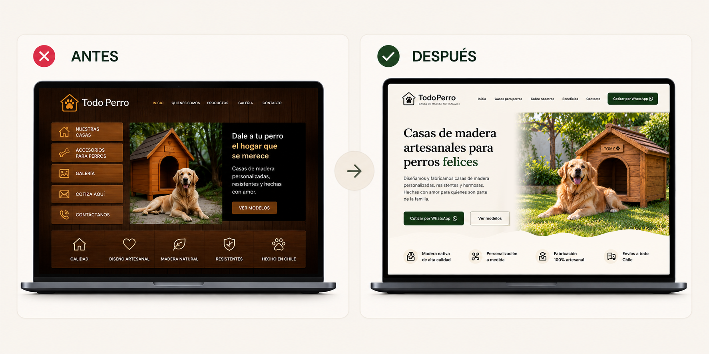
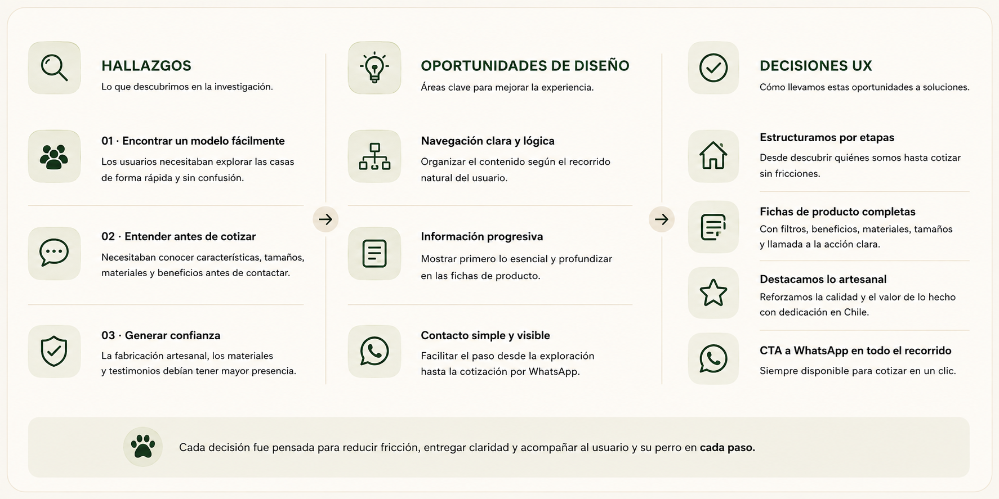
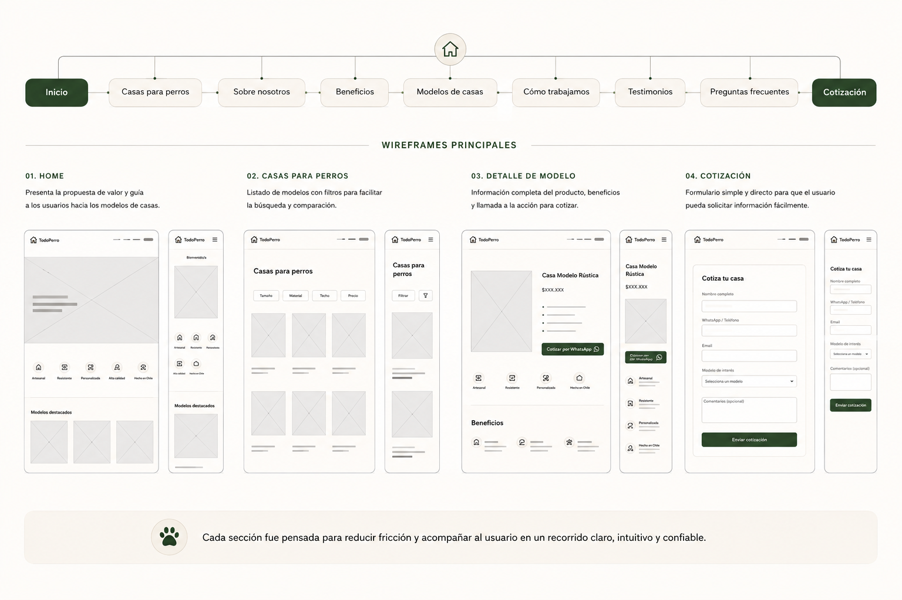
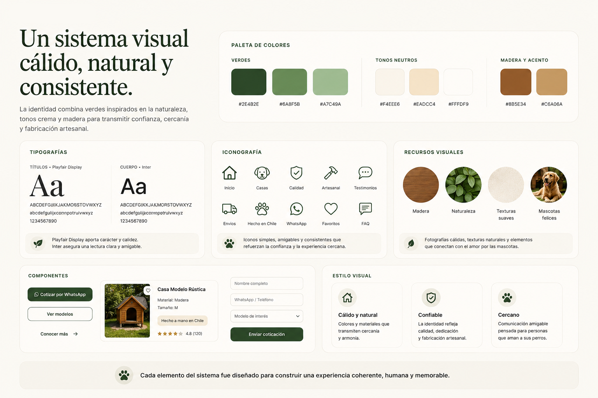
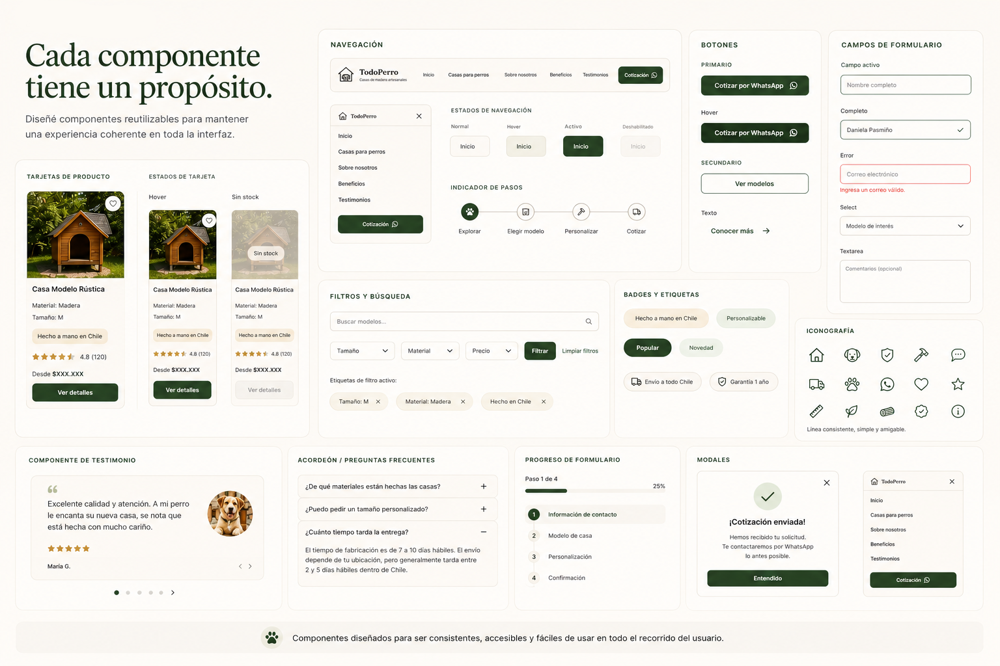
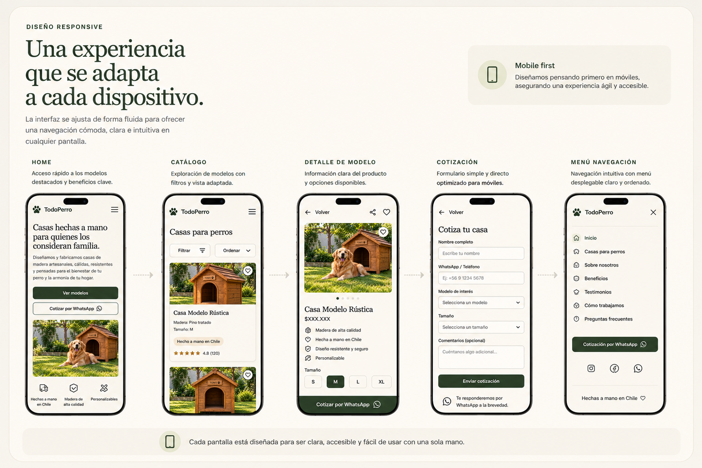

CASO DE ESTUDIO · UX/UI
Una experiencia
digital para los
mejores amigos.
Rediseño de la experiencia digital de TodoPerro, una marca de casas de madera personalizadas para perros, buscando una navegación más clara, cercana y confiable.
Diseño realizado en Chile · UX/UI · Diseño Web

01 · EL DESAFÍO
Una experiencia que no comunicaba todo su potencial.
El sitio necesitaba una experiencia más clara, visual y cercana que ayudara a los usuarios a comprender los productos y avanzar fácilmente hacia la cotización.

02 · PROCESO UX
Diseño centrado en las personas y sus perros.
Trabajé el proyecto desde una perspectiva centrada en el usuario para comprender sus necesidades y transformar esos hallazgos en decisiones de diseño.

03 · ARQUITECTURA Y WIREFRAMES
Primero estructuramos. Después diseñamos.
La experiencia se organizó en secciones que acompañan al usuario desde el descubrimiento del producto hasta la cotización.

03.5 · DECISIONES DE EXPERIENCIA
Cada decisión busca facilitar la elección.
La estructura del sitio organiza la información para acompañar al usuario desde el descubrimiento de las casas hasta el contacto con la marca.
Jerarquía clara
Priorizamos producto, beneficios y llamados a la acción para facilitar la lectura.
Navegación simple
La arquitectura reduce la fricción y ordena el recorrido por el contenido.
Experiencia responsive
La propuesta se adapta a desktop y móvil manteniendo claridad y consistencia.
Identidad cercana
Verdes, crema, madera e iconografía construyen una experiencia cálida y artesanal.
04 · DESIGN SYSTEM
Una identidad visual cálida, natural y cercana.
La identidad combina verdes inspirados en la naturaleza, tonos crema y madera para transmitir confianza, cercanía y fabricación artesanal.

05 · UI Y COMPONENTES
Componentes para una experiencia clara.
Diseñé componentes reutilizables para mantener una interfaz ordenada y fácil de usar.

06 · DISEÑO FINAL
Una experiencia clara y cercana.
La interfaz se adapta de forma fluida para ofrecer una navegación cómoda e intuitiva en cualquier pantalla.
Una experiencia clara en cada dispositivo.
El diseño final busca que cada interacción sea clara y cercana, facilitando la elección de una casa y el contacto con la marca.


07 · EVOLUCIÓN DEL DISEÑO
Del planteamiento a la experiencia final.

Hecho con amor, para quienes son familia. 🐾
TodoPerro fue diseñado para transformar una experiencia digital compleja en una experiencia más clara, cálida y conectada con las personas que consideran a sus perros parte de la familia.
← Ver todos los proyectos